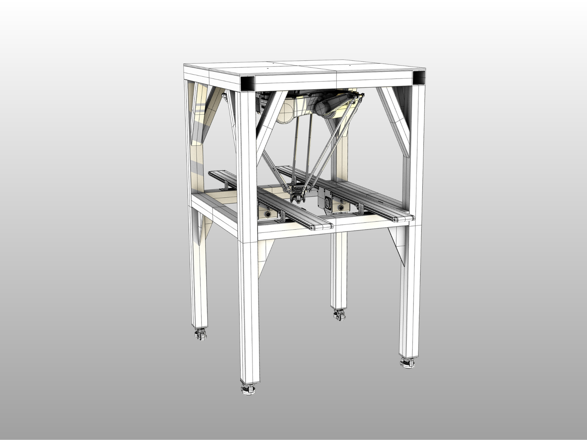
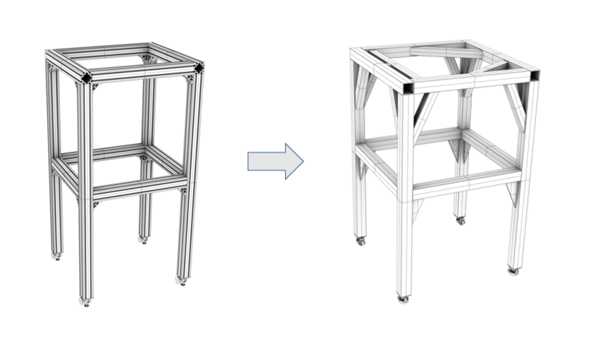
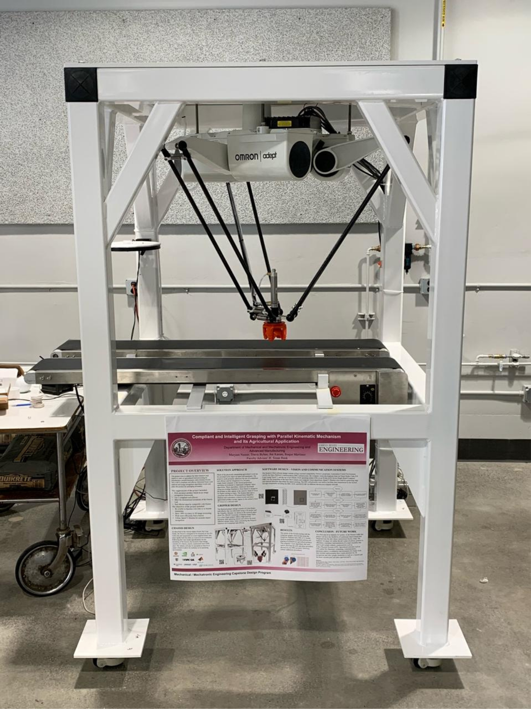
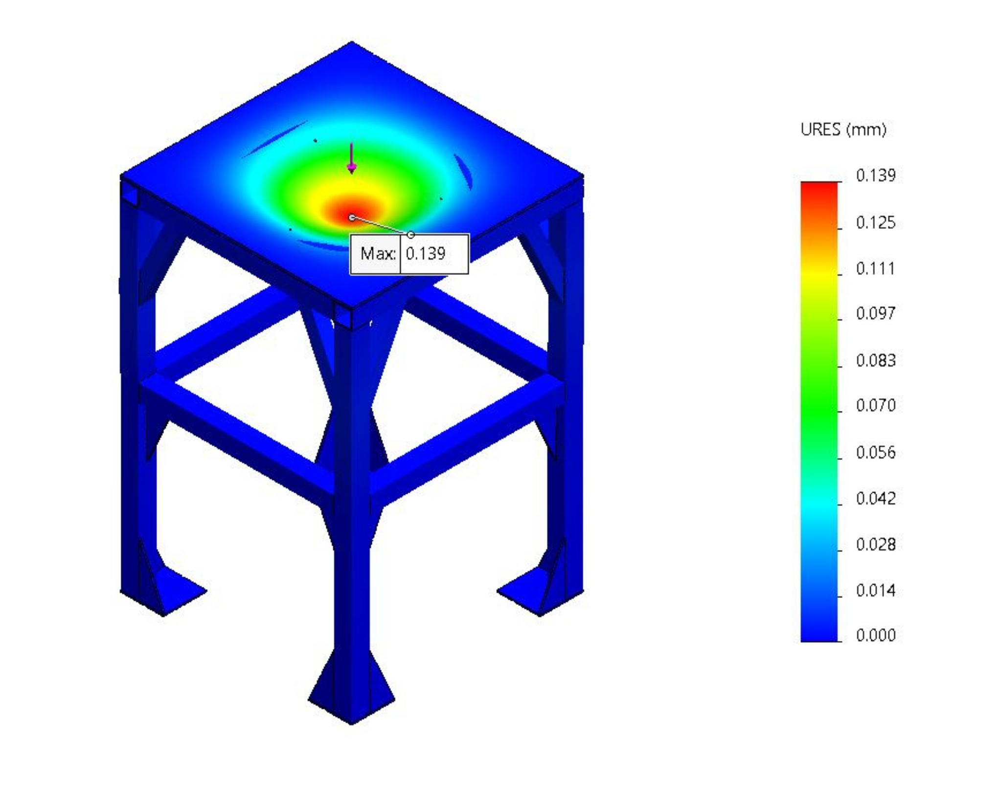
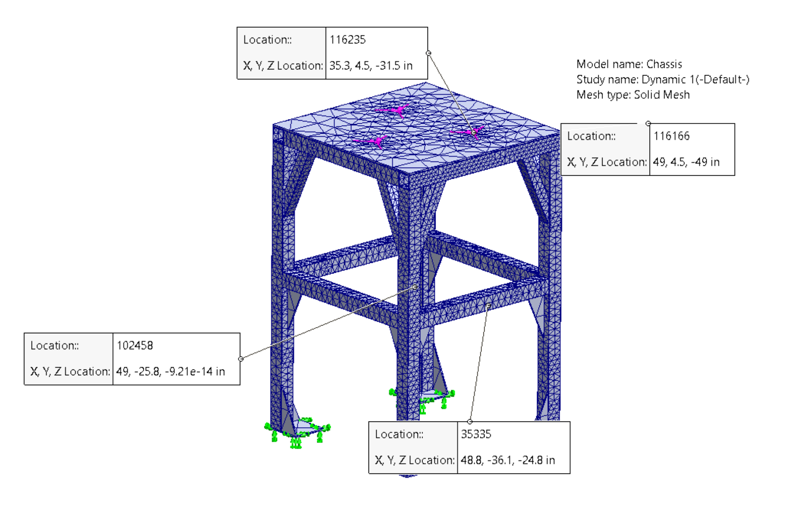
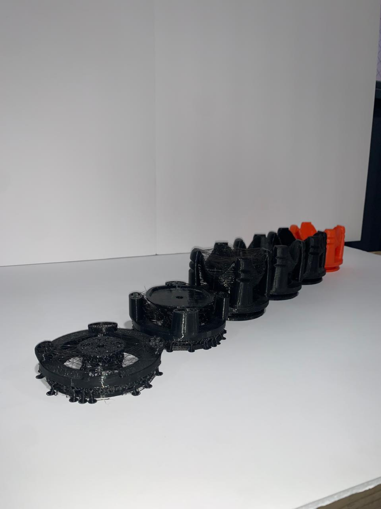
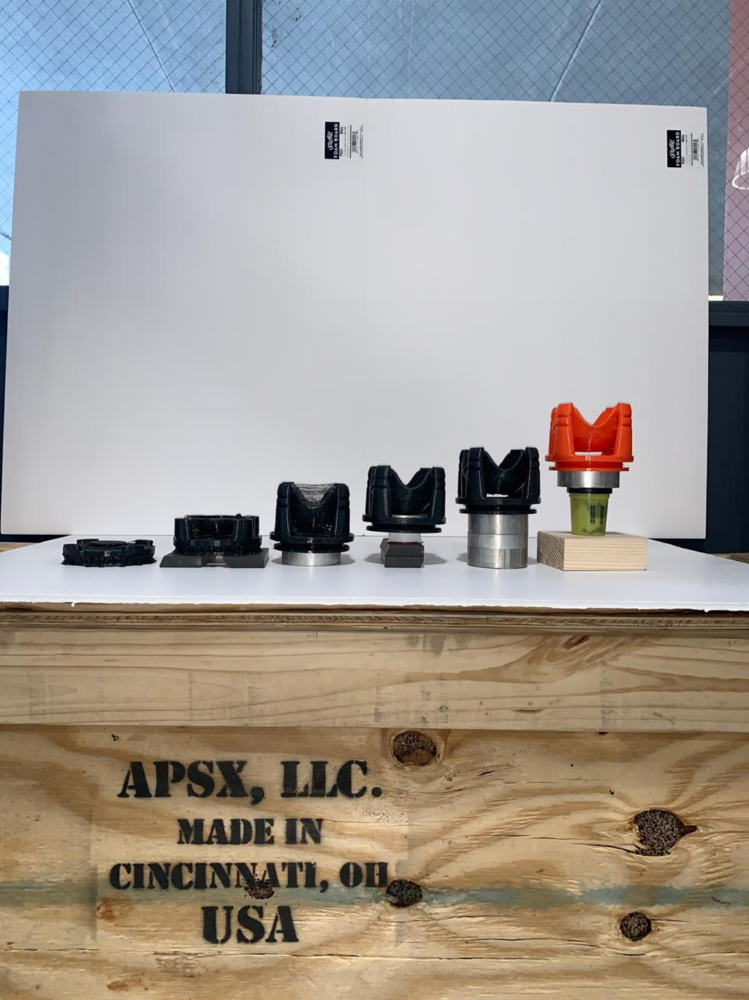
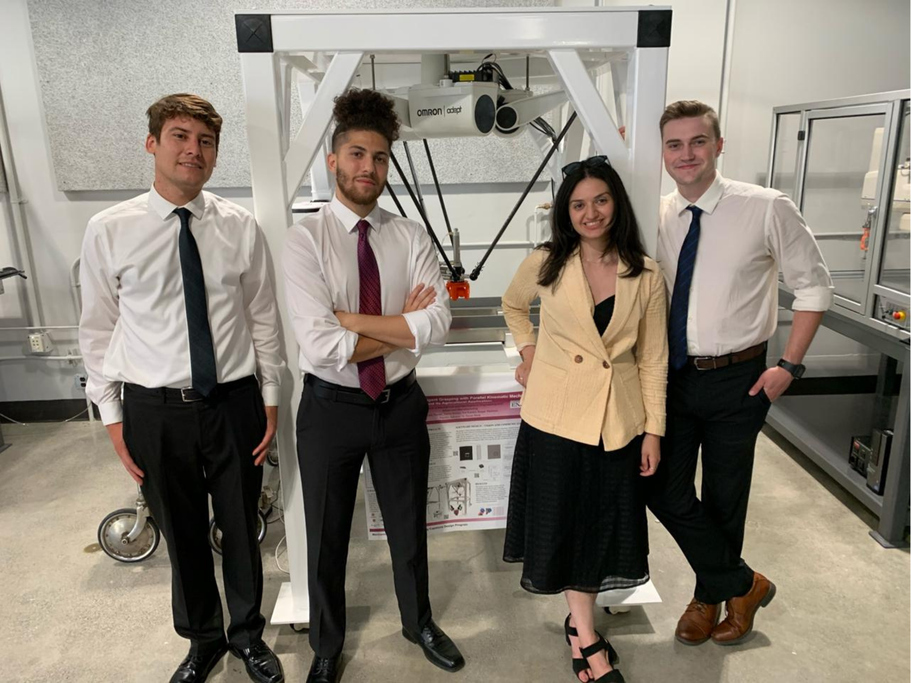

Robotic Agri-Gripper
Compliant and Intelligent Grasping with Parallel Kinematic Mechanism

Overview
Timeline: August 2021 – May 2022
Institution: Department of Mechanical and Mechatronic Engineering and
Advanced Manufacturing, The California State University - Chico
As the global demand for food increases, traditional labor-intensive agricultural methods are becoming unsustainable. This project tackled that challenge by developing a parallel-kinematic robotic system with a compliant soft-material end-effector, capable of performing delicate pick-and-place tasks for food processing and packaging.
The system combined mechanical design, manufacturing, and computer vision, aiming to automate repetitive manual work while maintaining the precision and care required for handling agricultural produce.
The Challenge
We sought to design a robotic system that:
- Accurately identify, pick, and place produce using computer vision.
- Maintain precision and compliance to avoid product damage.
- Integrate seamlessly with industrial robotics infrastructure (Omron Hornet 565).
- Be reliable and repeatable with minimal human interaction.
This meant combining mechanical engineering and software integration into a single cohesive platform.
Design & Chassis Development
The project explored multiple design paths covering chassis structure, camera and computer selection, and communication protocols. Initial chassis designs used aluminum extrusion for modularity but were later replaced due to rigidity considerations. The final design was built from ASTM-A500 steel tubing and plating, offering superior stiffness and durability under cyclic robotic loading.
I was responsible for the structural modeling, simulation, and optimization of the chassis, as well as validating all
mechanical assumptions through FEA and analytical comparison. In addition, I coordinated the sourcing and delivery of
materials, and managed the manufacturing and welding process, ensuring structural accuracy during fabrication, a
critical step given that the steel tubes used were extremely heavy and required precise, reinforced connections.
After welding, the structure consisted of two main assemblies: the chassis body and the top plate. I performed precise
measurements and defined all hole placements for both the screws connecting the top plate to the chassis and those
securing the robot to the top plate, guaranteeing structural stability and alignment. Once assembled, the robot/top plate assembly was
mounted using a winch system onto the 7-foot-tall chassis, where hole alignment was perfect, and the entire system was
successfully integrated into a single, rigid assembly.


Static & Dynamic Analysis
To verify performance, I conducted both static (hand-written + Solidworks) and dynamic (Solidworks) FEA studies.
Static Analysis:
Used analytical equations to predict plate deflection under the
robot’s weight.
Results: analytical = 0.1557 mm deflection; FEA = 0.139 mm deflection, confirming high
correlation between the two methods and successdul plate thickness and material selection.
Dynamic Analysis:
Performed frequency-response simulations using linear dynamic and harmonic studies.
Input: cyclic loading generated by end-effector motion.
On the other hand, a very crucial aspect was altering the study’s properties to a number of 10 Frequencies ranging from
8.4 to 150 Hz [“Industrial Robotics Automation Catalog, Product Datasheets.” Omron Industrial Automation], along with a
bandwidth of 0.6 around each frequency and a Linear Interpolation.
Identified safe operational frequency bands between 37–70 Hz and 120–140 Hz, ensuring structural
resonance avoidance and stability during continuous operation.



Compliant Gripper Design
The end-effector was the centerpiece of this project; a four-finger compliant gripper 3D-printed with NinjaFlex filament. This soft material enabled gentle yet controlled gripping of produce, balancing flexibility and precision.
The design was based on human grasp taxonomy research, ensuring effective contact points and adaptive deformation. The pneumatic actuation system provided consistent force control across varying object shapes and textures, ideal for food handling.


Vision & Control System Integration
The system combined four key technologies:
- Omron ACE (Automation Control Environment)
- OPC Infrastructure
- OpenCV Algorithms (Python/C++ on VS Code)
- NVIDIA AGX Xavier SBC (Ubuntu 18.04)
Through the OPC framework, data seamlessly flowed between the SBC, ACE, and MATLAB, enabling synchronized visual recognition and robotic motion. The system achieved > 90 % accuracy in 2D image processing, surpassing the performance goals set at the start of the project.
Collaboration & My Role
As part of a multidisciplinary team of four engineers, I led the:
- Mechanical design, simulation, and assembly of the chassis.
- Design and integration of the compliant gripper with the delta robot.
Faculty Advisor: Dr. H. Sinan Bank
Team Members: Maryam Nassar, Travis Bybee, Joe Karam, Roque Martinez

Impact & Future Work
The project demonstrated how parallel-kinematic robotics and soft materials can transform agricultural automation. As a first step toward an Industry 4.0 system within the Omron CoLab, the setup was designed for continuous improvement and future integration into a smart factory ecosystem featuring cyber-physical systems.
Planned extensions include:
- Implementing object-depth detection for 3D recognition.
- Exploring alternative gripper modalities such as vacuum pads for diverse produce handling.
- Expanding communication layers to enable full autonomous coordination among multiple robotic
systems.
Result
Problem: Agricultural packaging required repetitive, delicate labor unsuitable for traditional
automation.
Method: Designed a steel-framed robotic platform with a soft, compliant gripper and integrated
computer-vision control.
Result: A validated, high-accuracy robotic pick-and-place system ready for adaptation into
Industry 4.0 agricultural environments.
Credits:
Developed at the California State University, Chico
Department of Mechanical and Mechatronic Engineering and Advanced Manufacturing
Faculty Advisor: H. Sinan Bank
Team Members: Maryam Nassar, Travis Bybee, Joe Karam, Roque Martinez